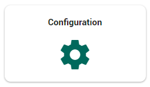
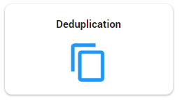
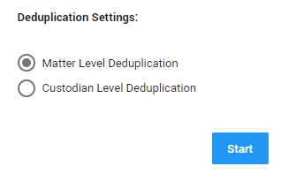
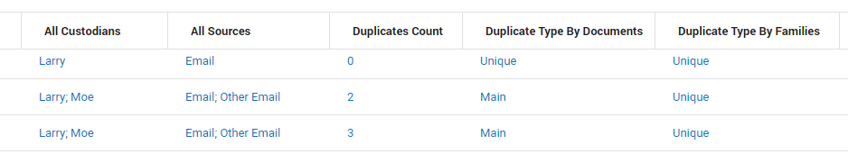
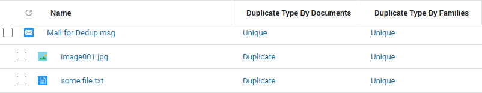
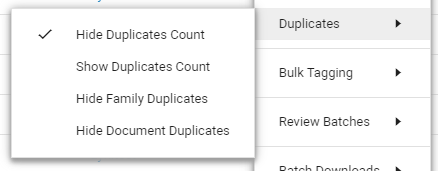
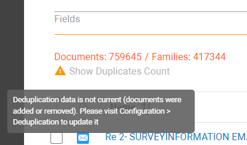
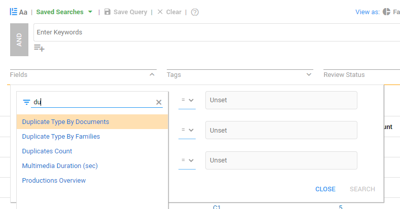

Note: If you do not have access to the Deduplication functionality yet, please contact ZyLAB.
Start your own deduplication and detect duplicate files at the matter level or per custodian. Reviewers will be able to review and produce only one version.
Duplicates remain present in ZyLAB ONE. This allows the reviewer to see if multiple custodians possess a file and/or if there are multiple sources where a file is present.
Deduplication needs to be started manually.
|
|
Note: If you do not have access to the Deduplication functionality yet, please contact ZyLAB. |
Normally, the Binary Hash code is used to detect duplicates. However, this code is not sufficient for detecting duplicate emails as it is calculated based on all available data (including metadata like time sent, email program or browser used, email server, etc). As a result all emails calculated with the Binary Hash code are unique. In order to detect duplicate emails you need another Hash code: the Deduplication Hash code. This code only looks at main content information (like sender, recipient(s), subject and body) and is used during the Deduplication process.
Deduplication can be found via the Home page. Select Configuration.

Select Deduplication.

Determine your Deduplication Settings.

To detect duplicate files on matter level (the whole data set in a matter is processed), select Matter Level Deduplication.
To detect duplicate files per custodian (only the data of a specific custodian is processed), select Custodian Level Deduplication.
|
|
Note: When choosing Custodian Level Deduplication, another custodian might possess a duplicate file (shown in the All Custodians field, see below) or a duplicate file might be present in another source (shown in the All Sources field). Though a detected duplicate file might be unique for specific custodians, the Duplicates Count shows the number of duplicates on the matter level. |
Click Start and wait until all files are processed.
Once the deduplication job has finished running, visit the Document List to view information about duplicate files.
In the Document List, you can select one to five columns containing all information extracted with the deduplication process. See

All Custodians
Shows all custodians who are in possession of a file.
All Sources
Shows all sources where a file is present.
Duplicates Count
Shows the number of duplicates, where zero (0) means there is only one version of the file. When the duplicate count is 1, there are two versions (the original and the duplicate). When the duplicate count is 2, there are three versions (the original and two duplicates). Etc.
|
|
Note: Though a document might be unique for specific custodians (detected when executing Custodian Level Deduplication), the Duplicates Count will indicate the number of duplicates on a matter level. |
Duplicate Type by Documents
Shows whether a file is unique (a single occurrence of the original file), main (the first detected file of multiple occurrences), a duplicate or unknown (this is a file without a hash code and should not normally happen; it could indicate an error during processing).
Duplicate Type by Families
File hashes within a family are compared with file hashes of other families to check if those families are duplicates.
|
|
Note: For an example to explain the difference between Duplicate Type by Documents or By Families, click A unique email contains two attachments (see screenshot below). Within the family (email + attachments), these attachments are also unique (no other family has the same email + the same two attachments). However, both attachments do occur in another unique email, which makes each attachment a duplicate on document level.  |
Filter the result list. Once duplicates are hidden, reviewers can concentrate on the main/unique files. Review batches can be created based on this result list.
You can filter the result list via the Settings icon > Duplicates.

|
|
Note: Deduplication results might become outdated (for example, when new documents are added to the matter) and a message will explain how to solve that.  |
Search on duplicates via the following fields:
Duplicates Count
Duplicate Type by Documents
Duplicate Type by Families

After review, you can produce the documents that are present in your result list. In the settings, the option Produce all duplicates is selected by default. All duplicates present in your matter will be produced. When this option is deselected only the files that are currently present in the result list will be produced.
When defining the load file(s), you can add all fields related to Deduplication (All Custodians, All Sources, Duplicates Count, Duplicate Type by documents and Duplicate Type by families).
Please note that with the Produce all duplicates checkbox not selected, it might be necessary to define three additional fields to prevent data leakage.
For example, when adding the All Custodians field, it will show all custodians who possess a duplicate of that a file. Or when adding the All Sources field, it will show all sources where a duplicate file is present. And when adding the Duplicates Count field, it will show the number of times a copy is present (even when duplicates are not produced). You might not want to share that information.
Therefore, to prevent data leakage, the following fields have been added:
All Custodians in this production
Will only show the custodians that are present in this production and had a copy that is present in this production.
All Sources in this production
Will only show the sources that are present in this production and contain a copy that is present in this production.
Duplicates Count in this production
Will only show the number of times a copy is present in this production.
Please note this field is not available when the option Produce all duplicates is selected. In that case, you can use the Duplicates Count field.